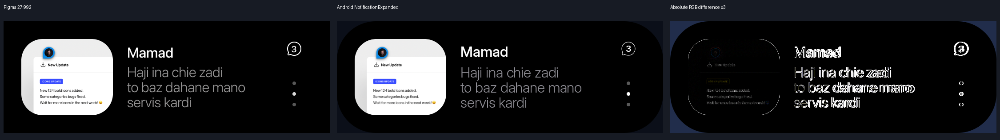
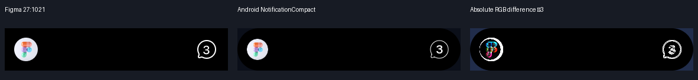
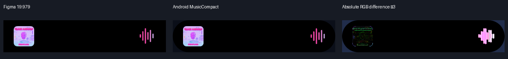
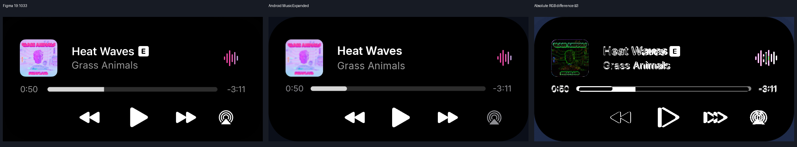
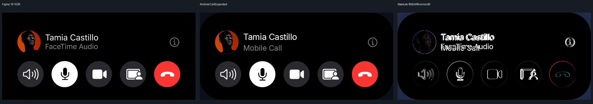
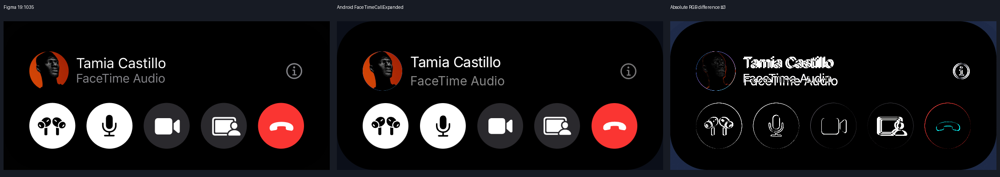
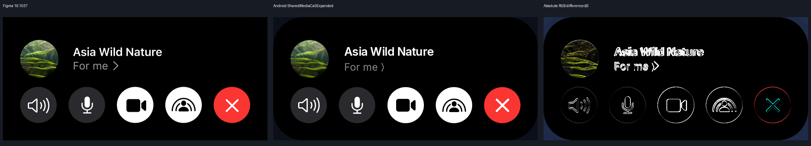
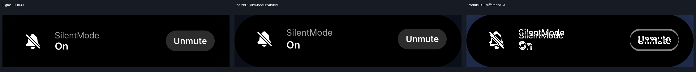
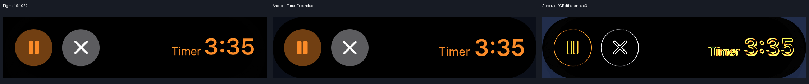
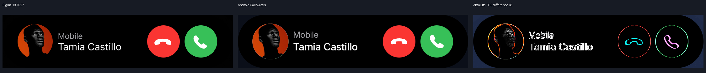

NotificationExpanded
Size delta 1.00 × 0.00 dp; foreground MAE 23.57/255; foreground IoU 0.849. Review required.

Native Android surface crops at 2 pixels/dp, reference surface bounds excluding shadow. Android is never resized to hide size differences. Black canvas padding preserves mismatched bounds. Metrics quantify differences; they do not certify exact parity. Inter is an approved font substitute. Playback progress/state and source-supported controls may differ. Production accessibility overlay acceptance is separate.
Size delta 1.00 × 0.00 dp; foreground MAE 23.57/255; foreground IoU 0.849. Review required.

Size delta 1.00 × 0.00 dp; foreground MAE 23.57/255; foreground IoU 0.849. Review required.
Size delta 0.00 × 0.00 dp; foreground MAE 67.73/255; foreground IoU 0.758. Review required.

Size delta 0.00 × 0.00 dp; foreground MAE 35.21/255; foreground IoU 0.778. Review required.

Size delta 0.00 × 0.00 dp; foreground MAE 65.66/255; foreground IoU 0.674. Review required.

Size delta 0.00 × 0.00 dp; foreground MAE 26.11/255; foreground IoU 0.876. Review required.

Size delta 0.00 × 0.00 dp; foreground MAE 27.05/255; foreground IoU 0.873. Review required.

Size delta 0.00 × -0.14 dp; foreground MAE 26.64/255; foreground IoU 0.880. Review required.

Size delta 0.00 × 0.00 dp; foreground MAE 59.35/255; foreground IoU 0.660. Review required.

Size delta 0.00 × 0.27 dp; foreground MAE 22.63/255; foreground IoU 0.847. Review required.

Size delta 0.00 × 0.00 dp; foreground MAE 27.68/255; foreground IoU 0.855. Review required.
